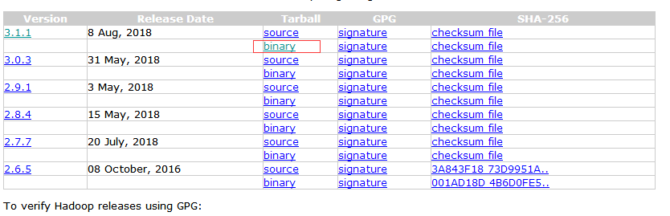

目录
集群环境搭建
配置java环境
Linux下 cd /usr/
mkdir apps
安装java：2种方法
官网有.rmp与.tar.gz 2种包下哪个都行
安装java：第一种.rpm方法
rpm -ivh jdk1.8.0.rpm /usr/apps
java -version#能输出则证明安装成功
find / -name java#查看java路径
vi /etc/profile#配置路径
JAVA_HOME=/usr/java/jdk1.8.0_181-amd64
PATH=.:$PATH:$JAVA_HOME/bin
export JAVA_HOME PATH
source /etc/profile #重启配置文件
安装java：第二种.tar.gz方法
tar -zxvf jdk-x.x.x.tar.gz ~/usr/local #解压包
与上面一样
安装完就可以把源码包删除了
rm -rf jdk-x.x.x.rmp
以上就是java环境搭建安装hadoop
hadoop为集群所以最少需要3台Linux机器
tar -zxvf hadoop-3.1.1.gz -C /usr/apps/ #解压文件
进入对应目录
cd share/
rm -rf doc/ #doc就是文档很大删掉
配置hadoop环境
3.0以后需要配置6个文件
hadoop-3.0.0/etc/hadoop/hadoop-env.sh
hadoop-3.0.0/etc/hadoop/yarn-env.sh
hadoop-3.0.0/etc/hadoop/core-site.xml
hadoop-3.0.0/etc/hadoop/hdfs-site.xml
hadoop-3.0.0/etc/hadoop/mapred-site.xml
hadoop-3.0.0/etc/hadoop/yarn-site.xml
1）配置hadoop-env.sh
#The java implementation to use ...
export JAVA_HOME=/usr/java/jdk1.8.0_181-amd64
2）配置core-site.xml
<configuration> <property> <name>fs.defaultFS</name> <value>hdfs://192.168.219.11:9000/</value> </property> </configuration>
3）配置hdfs-site.xml
<!—其他的机器不需要配置第一个property块--><configuration> <property> <name>dfs.namenode.name.dir</name> <value>/root/hdpdata/name</value> </property> <property> <name>dfs.datanode.data.dir</name> <value>/root/hdpdata/data</value> </property> </configuration>
vi /etc/profile
JAVA_HOME=/usr/java/jdk1.8.0_181-amd64br
export HADOOP_HOME=/usr/apps/hadoop-3.1.1
PATH=.:$PATH:$JAVA_HOME/bin:$HADOOP_HOME/bin:$HADOOP_HOME/sbin
export JAVA_HOME PATH
发给其他台scp -r hadoop3.1.1/192.168.219.12 /usr/apps/
启动hadoop
hadoop namenode -format #第一台机器（namenode）初始化
bash start-all.sh 启动五大进程